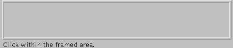

GUI: AWT Containers |
Panels
The Panel class is a general-purpose Container subclass. You can use it as-is to hold Components, or you can define a subclass to perform special functionality, such as event handling for the objects the Panel contains.
Note:
The Applet class is a Panel subclass with special hooks to run in a browser or other applet viewer.
Code Examples:
Panel p1 = new Panel(); p1.add(new Button("Button 1")); p1.add(new Button("Button 2")); p1.add(new Button("Button 3"));A Panel subclass that draws a frame around its contents.

class FramedArea extends Panel { public FramedArea(CoordinatesDemo controller) { ...//Set the layout manager. //Add any Components this Panel contains... } //Ensure that no Component is placed on top of the frame. //The inset values were determined by trail and error. public Insets insets() { return new Insets(4,4,5,5); } //Draw the frame at this Panel's edges. public void paint(Graphics g) { Dimension d = size(); Color bg = getBackground(); g.setColor(bg); g.draw3DRect(0, 0, d.width - 1, d.height - 1, true); g.draw3DRect(3, 3, d.width - 7, d.height - 7, false); } }